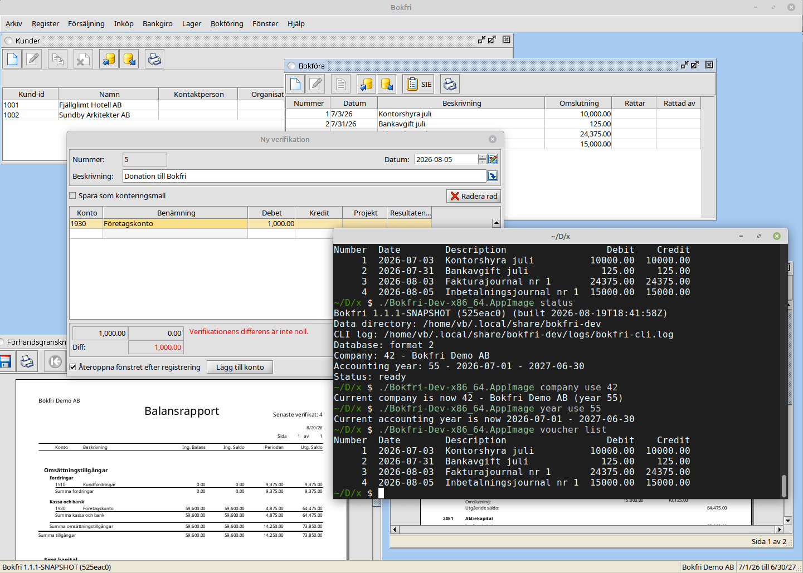

Fri bokföring för föreningar och småföretag, helt gratis för alltid

Bokfri är ett fritt och kostnadsfritt bokföringsprogram som du installerar på din egen dator. Inga abonnemang, ingen molntjänst — dina data stannar hos dig.
Programmet har använts i över 20 år (ursprungligen som JFS Accounting) och vidareutvecklas idag med öppen källkod.
Senaste versionen hittar du på nedladdningssidan eller GitHub Releases.
Läs dokumentationen för att lära dig mer om Bokfris funktioner.
Bokfri är öppen källkod under GPLv3. Källkoden finns på GitHub.
Bokfri är en vidareutveckling av JFS Accounting, ett svenskt bokföringsprogram som har funnits sedan tidigt 2000-tal. Projektet moderniseras löpande med fokus på stabilitet, öppen källkod och ett rent användargränssnitt.
Frågor eller synpunkter? Hör av dig till vb@viblo.se.
Bokfri is a free, open-source accounting application for Swedish associations and small businesses. It handles invoices, vouchers, customer and supplier registries, reports, and SIE/BGMax import/export. Available for Windows, macOS, and Linux under the GPLv3 license.